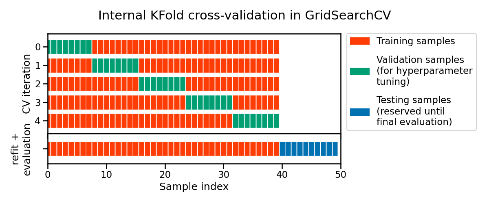
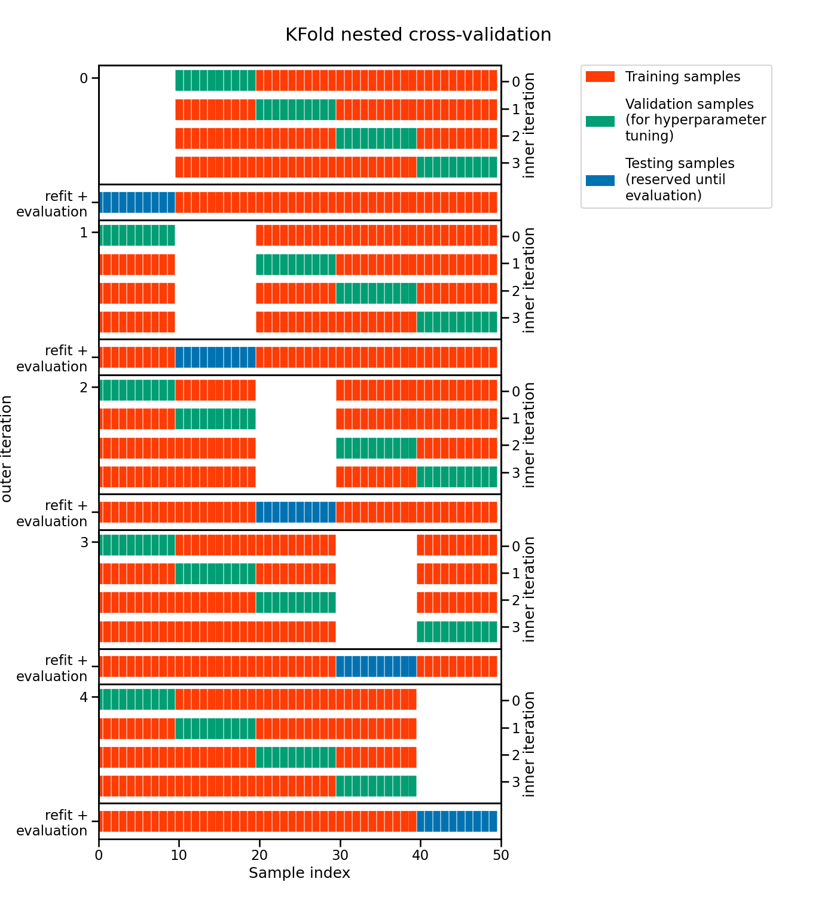

Evaluation and hyperparameter tuning#
In the previous notebook, we saw two approaches to tune hyperparameters. However, we did not present a proper framework to evaluate the tuned models. Instead, we focused on the mechanism used to find the best set of parameters.
In this notebook, we reuse some knowledge presented in the module “Selecting the best model” to show how to evaluate models where hyperparameters need to be tuned.
Thus, we first load the dataset and create the predictive model that we want to optimize and later on, evaluate.
Loading the dataset#
As in the previous notebook, we load the Adult census dataset. The loaded
dataframe is first divided to separate the input features and the target into
two separated variables. In addition, we drop the column "education-num" as
previously done.
import pandas as pd
target_name = "class"
adult_census = pd.read_csv("../datasets/adult-census.csv")
target = adult_census[target_name]
data = adult_census.drop(columns=[target_name, "education-num"])
Our predictive model#
We now create the predictive model that we want to optimize. Note that this pipeline is identical to the one we used in the previous notebook.
from sklearn.compose import make_column_transformer
from sklearn.preprocessing import OrdinalEncoder
from sklearn.compose import make_column_selector as selector
categorical_columns_selector = selector(dtype_include=object)
categorical_columns = categorical_columns_selector(data)
categorical_preprocessor = OrdinalEncoder(
handle_unknown="use_encoded_value", unknown_value=-1
)
preprocessor = make_column_transformer(
(categorical_preprocessor, categorical_columns),
remainder="passthrough",
)
from sklearn.ensemble import HistGradientBoostingClassifier
from sklearn.pipeline import Pipeline
model = Pipeline(
[
("preprocessor", preprocessor),
(
"classifier",
HistGradientBoostingClassifier(random_state=42, max_leaf_nodes=4),
),
]
)
model
Pipeline(steps=[('preprocessor',
ColumnTransformer(remainder='passthrough',
transformers=[('ordinalencoder',
OrdinalEncoder(handle_unknown='use_encoded_value',
unknown_value=-1),
['workclass', 'education',
'marital-status',
'occupation', 'relationship',
'race', 'sex',
'native-country'])])),
('classifier',
HistGradientBoostingClassifier(max_leaf_nodes=4,
random_state=42))])In a Jupyter environment, please rerun this cell to show the HTML representation or trust the notebook. On GitHub, the HTML representation is unable to render, please try loading this page with nbviewer.org.
Parameters
Parameters
['workclass', 'education', 'marital-status', 'occupation', 'relationship', 'race', 'sex', 'native-country']
Parameters
passthrough
Parameters
Evaluation#
Without hyperparameter tuning#
In the module “Selecting the best model”, we saw that one must use
cross-validation to evaluate such a model. Cross-validation allows to get a
distribution of the scores of the model. Thus, having this distribution at
hand, we can get to assess the variability of our estimate of the
generalization performance of the model. Here, we recall the necessary
scikit-learn tools needed to obtain the mean and standard deviation of the
scores.
from sklearn.model_selection import cross_validate
cv_results = cross_validate(model, data, target, cv=5)
cv_results = pd.DataFrame(cv_results)
cv_results
| fit_time | score_time | test_score | |
|---|---|---|---|
| 0 | 0.388743 | 0.047511 | 0.863241 |
| 1 | 0.383447 | 0.047328 | 0.860784 |
| 2 | 0.384057 | 0.048113 | 0.860360 |
| 3 | 0.384853 | 0.049664 | 0.862408 |
| 4 | 0.387219 | 0.048512 | 0.866912 |
The cross-validation scores are coming from a 5-fold cross-validation. So we can compute the mean and standard deviation of the generalization score.
print(
"Generalization score without hyperparameters"
f" tuning:\n{cv_results['test_score'].mean():.3f} ±"
f" {cv_results['test_score'].std():.3f}"
)
Generalization score without hyperparameters tuning:
0.863 ± 0.003
We now present how to evaluate the model with hyperparameter tuning, where an extra step is required to select the best set of parameters.
With hyperparameter tuning#
As shown in the previous notebook, one can use a search strategy that uses cross-validation to find the best set of parameters. Here, we use a grid-search strategy and reproduce the steps done in the previous notebook.
First, we have to embed our model into a grid-search and specify the parameters and the parameter values that we want to explore.
from sklearn.model_selection import GridSearchCV
param_grid = {
"classifier__learning_rate": (0.05, 0.5),
"classifier__max_leaf_nodes": (10, 30),
}
model_grid_search = GridSearchCV(model, param_grid=param_grid, n_jobs=2, cv=2)
model_grid_search.fit(data, target)
GridSearchCV(cv=2,
estimator=Pipeline(steps=[('preprocessor',
ColumnTransformer(remainder='passthrough',
transformers=[('ordinalencoder',
OrdinalEncoder(handle_unknown='use_encoded_value',
unknown_value=-1),
['workclass',
'education',
'marital-status',
'occupation',
'relationship',
'race',
'sex',
'native-country'])])),
('classifier',
HistGradientBoostingClassifier(max_leaf_nodes=4,
random_state=42))]),
n_jobs=2,
param_grid={'classifier__learning_rate': (0.05, 0.5),
'classifier__max_leaf_nodes': (10, 30)})In a Jupyter environment, please rerun this cell to show the HTML representation or trust the notebook. On GitHub, the HTML representation is unable to render, please try loading this page with nbviewer.org.
Parameters
Parameters
['workclass', 'education', 'marital-status', 'occupation', 'relationship', 'race', 'sex', 'native-country']
Parameters
['age', 'capital-gain', 'capital-loss', 'hours-per-week']
passthrough
Parameters
As previously seen, when calling the fit method, the model embedded in the
grid-search is trained with every possible combination of parameters resulting
from the parameter grid. The best combination is selected by keeping the
combination leading to the best mean cross-validated score.
cv_results = pd.DataFrame(model_grid_search.cv_results_)
cv_results[
[
"param_classifier__learning_rate",
"param_classifier__max_leaf_nodes",
"mean_test_score",
"std_test_score",
"rank_test_score",
]
]
| param_classifier__learning_rate | param_classifier__max_leaf_nodes | mean_test_score | std_test_score | rank_test_score | |
|---|---|---|---|---|---|
| 0 | 0.05 | 10 | 0.864195 | 0.000061 | 4 |
| 1 | 0.05 | 30 | 0.870910 | 0.000061 | 1 |
| 2 | 0.50 | 10 | 0.869457 | 0.000819 | 2 |
| 3 | 0.50 | 30 | 0.866365 | 0.001822 | 3 |
model_grid_search.best_params_
{'classifier__learning_rate': 0.05, 'classifier__max_leaf_nodes': 30}
One important caveat here concerns the evaluation of the generalization
performance. Indeed, the mean and standard deviation of the scores computed by
the cross-validation in the grid-search are potentially not good estimates of
the generalization performance we would obtain by refitting a model with the
best combination of hyper-parameter values on the full dataset. Note that
scikit-learn automatically performs this refit by default when calling
model_grid_search.fit. This refitted model is trained with more data than
the different models trained internally during the cross-validation of the
grid-search.
We therefore used knowledge from the full dataset to both decide our model’s hyper-parameters and to train the refitted model.
Because of the above, one must keep an external, held-out test set for the final evaluation of the refitted model. We highlight here the process using a single train-test split.
from sklearn.model_selection import train_test_split
data_train, data_test, target_train, target_test = train_test_split(
data, target, test_size=0.2, random_state=42
)
model_grid_search.fit(data_train, target_train)
accuracy = model_grid_search.score(data_test, target_test)
print(f"Accuracy on test set: {accuracy:.3f}")
Accuracy on test set: 0.877
The score measure on the final test set is almost within the range of the internal CV score for the best hyper-parameter combination. This is reassuring as it means that the tuning procedure did not cause significant overfitting in itself (other-wise the final test score would have been lower than the internal CV scores). That is expected because our grid search explored very few hyper-parameter combinations for the sake of speed. The test score of the final model is actually a bit higher than what we could have expected from the internal cross-validation. This is also expected because the refitted model is trained on a larger dataset than the models evaluated in the internal CV loop of the grid-search procedure. This is often the case that models trained on a larger number of samples tend to generalize better.
In the code above, the selection of the best hyperparameters was done only on the train set from the initial train-test split. Then, we evaluated the generalization performance of our tuned model on the left out test set. This can be shown schematically as follows

Note
This figure shows the particular case of K-fold cross-validation
strategy using n_splits=5 to further split the train set coming from a
train-test split.
For each cross-validation split, the procedure trains a model on all the red
samples, evaluates the score of a given set of hyperparameters on the green
samples. The best hyper-parameters are selected based on those intermediate
scores.
Then a final model tuned with those hyper-parameters is fitted on the concatenation of the red and green samples and evaluated on the blue samples.
The green samples are sometimes called a validation sets to differentiate them from the final test set in blue.
However, this evaluation only provides us a single point estimate of the generalization performance. As you recall from the beginning of this notebook, it is beneficial to have a rough idea of the uncertainty of our estimated generalization performance. Therefore, we should instead use an additional cross-validation for this evaluation.
This pattern is called nested cross-validation. We use an inner cross-validation for the selection of the hyperparameters and an outer cross-validation for the evaluation of generalization performance of the refitted tuned model.
In practice, we only need to embed the grid-search in the function
cross_validate to perform such evaluation.
cv_results = cross_validate(
model_grid_search, data, target, cv=5, n_jobs=2, return_estimator=True
)
cv_results = pd.DataFrame(cv_results)
cv_test_scores = cv_results["test_score"]
print(
"Generalization score with hyperparameters tuning:\n"
f"{cv_test_scores.mean():.3f} ± {cv_test_scores.std():.3f}"
)
Generalization score with hyperparameters tuning:
0.871 ± 0.003
This result is compatible with the test score measured with the string outer train-test split.
However, in this case, we can apprehend the variability of our estimate of the generalization performance thanks to the measure of the standard-deviation of the scores measured in the outer cross-validation.
Here is a schematic representation of the complete nested cross-validation procedure:

Note
This figure illustrates the nested cross-validation strategy using
cv_inner = KFold(n_splits=4) and cv_outer = KFold(n_splits=5).
For each inner cross-validation split (indexed on the right-hand side), the procedure trains a model on all the red samples and evaluate the quality of the hyperparameters on the green samples.
For each outer cross-validation split (indexed on the left-hand side), the best hyper-parameters are selected based on the validation scores (computed on the green samples) and a model is refitted on the concatenation of the red and green samples for that outer CV iteration.
The generalization performance of the 5 refitted models from the outer CV loop are then evaluated on the blue samples to get the final scores.
In addition, passing the parameter return_estimator=True, we can check the
value of the best hyperparameters obtained for each fold of the outer
cross-validation.
for cv_fold, estimator_in_fold in enumerate(cv_results["estimator"]):
print(
f"Best hyperparameters for fold #{cv_fold + 1}:\n"
f"{estimator_in_fold.best_params_}"
)
Best hyperparameters for fold #1:
{'classifier__learning_rate': 0.05, 'classifier__max_leaf_nodes': 30}
Best hyperparameters for fold #2:
{'classifier__learning_rate': 0.05, 'classifier__max_leaf_nodes': 30}
Best hyperparameters for fold #3:
{'classifier__learning_rate': 0.05, 'classifier__max_leaf_nodes': 30}
Best hyperparameters for fold #4:
{'classifier__learning_rate': 0.05, 'classifier__max_leaf_nodes': 30}
Best hyperparameters for fold #5:
{'classifier__learning_rate': 0.05, 'classifier__max_leaf_nodes': 30}
It is interesting to see whether the hyper-parameter tuning procedure always select similar values for the hyperparameters. If it is the case, then all is fine. It means that we can deploy a model fit with those hyperparameters and expect that it will have an actual predictive performance close to what we measured in the outer cross-validation.
But it is also possible that some hyperparameters do not matter at all, and as a result in different tuning sessions give different results. In this case, any value will do. This can typically be confirmed by doing a parallel coordinate plot of the results of a large hyperparameter search as seen in the exercises.
From a deployment point of view, one could also choose to deploy all the models found by the outer cross-validation loop and make them vote to get the final predictions. However this can cause operational problems because it uses more memory and makes computing prediction slower, resulting in a higher computational resource usage per prediction.
In this notebook, we have seen how to evaluate the predictive performance of a model with tuned hyper-parameters using the nested cross-validation procedure.